4 Non-uniform motion along a line¶
4.1 Instantaneous velocity¶
Uniform motion is simple to describe, but is rarely achieved in practice. Most objects do not move at a precisely constant velocity. If you drop an apple it will fall downwards, but it will pick up speed as it does so (Figure 24), and if you drive along a straight road you are likely to encounter some traffic that will force you to vary your speed from time to time. For the most part, real motions are non-uniform motions.
Figure 24: A falling apple provides an example of non-uniform motion. A sequence of pictures taken at equal intervals of time reveals the increasing speed of the apple as it falls
Figure 25 shows the position-time graph of an object that has an increasing velocity over the period t = 0 to t = 20 s; a car accelerating from rest. As you can see, the position-time graph is curved. There is relatively little change in position during the first few seconds of the motion but as the velocity increases the car is able to change its position by increasingly large amounts over a given interval of time. This is shown by the increasing steepness of the graph. In everyday language we would say that the graph has an increasing gradient, but you saw in the last section that the term gradient has a precise technical meaning in the context of straight-line graphs. Is it legitimate to extend this terminology to cover curved graphs, and if so, how exactly should it be done?
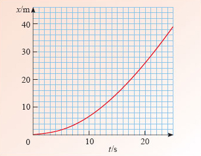
Figure 25: The position-time graph for a car accelerating from rest
Extending the concept of gradient to the case of curved graphs is actually quite straightforward. The crucial point to recognise is that if you look closely enough at a small part of a smooth curve, then it generally becomes indistinguishable from a straight line. (In a similar way, the surface of the Earth is clearly curved when viewed from space, but each region is approximately flat when seen close-up.) So, if we choose a point on a curve we can usually draw a straight line passing through that point which has the same slope as the curve at the point of contact. This straight line is said to be the tangent to the curve at the point in question. Now, we already know how to determine the gradient of a straight line, so we can define the gradient at any point on a curve to be the gradient of the tangent to the curve at that point, provided the curve is sufficiently smooth that a tangent exists.
Figure 26 repeats the position-time graph of the accelerating car, but this time tangents have been added at t = 5 s and t = 10 s. The gradient of any such tangent represents a velocity and is referred to as the instantaneous velocity of the car at the relevant time. At least, that’s what it should be called; in practice the word ‘instantaneous’ is often omitted, so references to ‘velocity’ should generally be taken to mean ‘instantaneous velocity’. Allowing ourselves this informality, we can say:
velocity at time t = gradient of position-time graph at time t.
Although we have had to extend the meaning of gradient, we can still regard it as a measure of the rate of change of one variable with respect to another, so we can also say:
velocity at time t = rate of change of position with respect to time at time t.
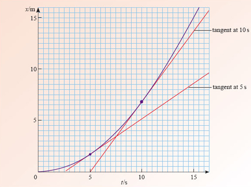
Figure 26: The instantaneous velocity at t = 5 s and at t = 10 s is determined by the gradient of the tangent to the position-time graph at each of those times
Question 14¶
Question¶
Estimate the (instantaneous) velocity of the car at t = 5 s and at t = 10 s (from Figure 26), and write down your answers taking care to distinguish one velocity from the other.
Answer¶
The relevant tangents are shown in Figure 26. Their gradients give the following estimates for the instantaneous velocities

How did you distinguish the velocity at t = 5 s from the velocity at t = 10 s? The conventional method is to use a common symbol for velocity, vx, but to follow it by the relevant value of time enclosed in parentheses, as in vx(5 s) and vx(10 s). This notation can also be used to indicate the velocity at any time t, by writing vx(t), even if the value of t is unspecified.
It is important to remember that vx(t) represents the (instantaneous) velocity at time t. It does not mean vx multiplied by t.
You will not be surprised to learn that the positive quantity |vx(t)| representing the magnitude of the instantaneous velocity at time t is called the instantaneous speed at time t. If we denote this by v(t), we can write
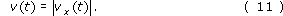
Speed and velocity are measured in the same units, m s−1. Some typical values of physically interesting speeds are listed in Figure 27.
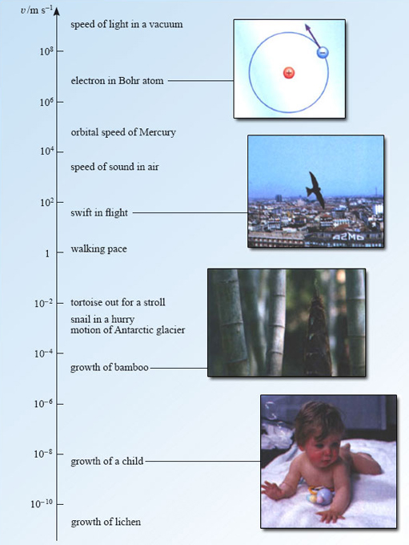
Figure 27: Some physically interesting speeds
4.2 Instantaneous acceleration¶
The procedure of Question 15 for determining the instantaneous velocity of the car can be carried out for a whole set of different times and the resulting values of vx can be plotted against t to form a graph. This has been done in Figure 28, which shows how the velocity varies with time. At time t = 0 s, the car has zero velocity because it starts from rest. At later times, the velocity is positive because the car moves in the direction of increasing x. The velocity increases rapidly at first, as the car picks up speed. Subsequently, the velocity increases more slowly, and eventually the car settles down to a steady velocity of just over 3 m s−1. We have already come across graphs of this general type in Section 3; they are known as velocity-time graphs. The crucial new feature here is that the velocity now depends on time.

Figure 28: A velocity-time graph for the moving car
The time dependence of velocity can have dramatic consequences. If you are on board a train, moving at a constant velocity, you might not even be aware of your motion and you will have no difficulty in, say, drinking a cup of coffee. However, drinking coffee can become distinctly hazardous if the driver suddenly changes the velocity of the train by putting on the brakes. In such situations the important physical quantity is the rate of change of velocity with respect to time, as measured by the gradient of the velocity-time graph. This is the quantity that we usually call acceleration, though once again it should more properly be called instantaneous acceleration. Thus
acceleration at time t = rate of change of velocity with respect to time at time t.
or, if you prefer
acceleration at time t = gradient of velocity-time graph at time t.
Acceleration is a key idea in physics. It was Newton’s recognition of the crucial role that acceleration played in determining the link between motion and force that formed the centrepiece of the Newtonian revolution. The detailed study of that revolution would take us too far from our present theme. For the moment let’s concentrate on some basic questions about acceleration itself. In particular, in what units should acceleration be measured, and what are typical values of acceleration in various physical contexts? The first of these you can answer for yourself.
Question 15¶
Question¶
What are suitable SI units for the measurement of acceleration?
Answer¶
Since acceleration is the rate of change of velocity with respect to time, the units of acceleration are the units of velocity (m s−1) divided by the units of time (s), so acceleration is measured in metres per second per second, which is abbreviated to m s−2.
As for typical values of acceleration, some physically interesting values are shown in Figure 29.
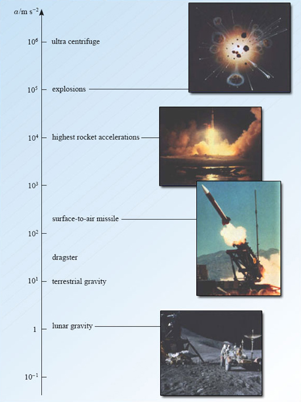
Figure 29: Some physically interesting values of acceleration
When dealing with non-uniform motion along the x-axis, the symbol ax(t) is normally used to denote instantaneous acceleration. As usual, ax(t) will be positive if the velocity is increasing with time, though, as you will see below, this statement needs careful interpretation. In contrast to the relationship between velocity and speed, there is no special name for the magnitude of an acceleration, though we shall use the symbol a(t) for this quantity, so we may write
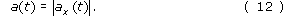
In physics, the concept of acceleration is precise and quantitative. It is important to realise that this precise definition differs, in some respects, from everyday usage. In ordinary speech, ‘accelerating’ is a synonym for ‘speeding up’. This is not true in physics. In physics, a particle accelerates if it changes its velocity in any way. A particle travelling along a straight line may accelerate by speeding up or by slowing down. It is tempting to suppose that a positive acceleration corresponds to speeding up and a negative acceleration corresponds to slowing down, but this is not always true either, as the following exercise shows.

Figure 30: The velocity-time graph used in Question 16
Question 16¶
Question¶
The velocity-time graph of Figure 30 is divided into four regions, marked A-D.
In which regions does the particle move in the direction of increasing x? In which regions is it moving in the direction of decreasing x?
In which regions does the particle speed up? In which regions does it slow down?
In which regions does the particle have positive acceleration? In which regions does the particle have negative acceleration?
Answer¶
The particle moves in the direction of increasing x when its velocity is positive. This occurs in regions A and B. Conversely, the particle moves in the direction of decreasing x when its velocity is negative. This occurs in regions C and D.
The particle is speeding up when the magnitude of its velocity is increasing. This occurs in regions A and C. Conversely, the particle is slowing down in regions B and D.
The particle will have a positive acceleration when the gradient of the velocity-time graph is positive. This occurs in regions A and D. Conversely the acceleration is negative in regions B and C.
So, for a particle with negative velocity, an increase in velocity (a positive acceleration) may result in a decrease in speed. You may think that it is a nuisance for physics to use words in such a non-standard way. However, the definitions of velocity and acceleration given in this course are essential if we are to develop a study of kinematics that is both simple and comprehensive. It does mean, however, that you must be careful in using words like velocity, speed and acceleration. In everyday speech, the word deceleration is used to mean ‘slowing down’, but this term is seldom encountered in physics since it is already covered by the scientific definition of acceleration.
4.3 A note on functions and derivatives¶
This subsection introduces two crucially important mathematical ideas, functions and derivatives, both of which are used throughout physics.
Functions and the function notation In Figure 25, the position x of the car depends on the time t. The graph associates a particular value of x with each value of t over the plotted range. In other circumstances we might know an equation that associates a value of x with each value of t, as in the case of the equation x = At + B that we discussed in Section 3. You can invent countless other ways in which x depends on t: for instance x = At2 + B or x = At + Bt2. In all such cases we describe the dependence of x on t by saying that x is a function of t. This terminology is widely used and is certainly not restricted to x and t. In the example of non-uniform motion we have just been discussing, the instantaneous velocity vx is a function of time and so is the instantaneous acceleration ax.
Generally, if the value of a quantity f is determined by the value of another quantity y, then we say that f is a function of y and we use the special notation f(y) to emphasise this relationship. Although we have only just defined what we mean by a function we have already been using this notation, as in vx(t) and ax(t), for some time.
This function notation has two great merits:
Writing f(y), provides a clear visual reminder that f depends on y in a well-defined way. If we happen to know the equation that relates f to y, say f = y2, then we can show this explicitly by writing f(y) = y2.
If we want to indicate the value of f that corresponds to a particular value of y, it is easy to do so. For example, the value of f(y) at y = 2 can be written f(2). We call f(2) the function value at y = 2. Of course, in order to be able to write f(2) as a number we would have to know the explicit form of f(y). For example, if f(y) = y2, then we can say f(2) = 22 = 2 × 2 = 4.
The only serious disadvantage of the function notation is that you may confuse f(y) with f × y. Be careful! If f is a function, then f(y) means f is a function of y; it does not mean f × y.
Some functions arise repeatedly and are given special names so that they can be easily identified. You will be familiar with some of these names, even if you are not yet fully familiar with the functions they describe. For instance, if you look at a scientific calculator (see Figure 31 for example) you will sometimes find that there are keys labelled sin, cos, log and ex; each of these is the name of an important function that you will meet later. The corresponding calculator keys are actually called ‘function keys’. Electronic calculators are constructed in such a way that when you key in a number and press a function key, the calculator works out the corresponding function value and displays it. If the value you keyed in is not within the acceptable range of input values for the function you selected (usually called the domain of the function), then the calculator will probably display an error message such as ‘err’.
Figure 31: A calculator has in-built routines for evaluating basic functions such as x2, sin(x), cos(x), log(x), etc. These are activated by pressing the function keys
One particularly simple class of functions consists of functions of the form

where A is a constant and n is a positive whole number, such as 0, 1, 2, 3, …. Functions of this kind include squaresf(y) = y2, and cubesf(y) = y3, which correspond to A = 1 with n = 2 and n = 3, respectively. The function that arises when n = 0 is especially noteworthy since, by convention, y0 = 1, so f(y) = A in this case, a constant. Thus, even a simple constant is just a special kind of function. In the case of a constant function each value of y is associated with the same value of f(y), as in the case of the velocity-time graph of a uniformly moving object.
Next in complexity are sums of squares, cubes, etc. These functions are called polynomial functions and include the following special cases (where A, B, C and D are constants):
linear functions of the form | f(y) = Ay + B |
quadratic functions of the form | f(y) = Ay2 + By + C |
cubic functions of the form | f(y) = Ay3 + By2 + Cy + D. |
In the case of uniform motion (described in Section 3), the position-time graph is a straight line described by an equation of the form x = At + B. It should now be clear that another way of describing this relationship is to say that the position is a linear function of the time, x(t) = At + B. In a similar way, the non-uniform motion of a test vehicle in the NASA drop-shaft described at the beginning of this course can be described by a quadratic function x(t) = At2 + Bt + C, and many other forms of one-dimensional motion can be described, at least approximately, by suitably chosen polynomial functions.
Derived functions and derivative notation Given the function x(t) that describes some particular motion, you could plot the corresponding position-time graph, measure its gradient at a variety of times to find the instantaneous velocity at those times and then plot the velocity-time graph. If you had some time left, you might go on to measure the gradient of the velocity-time graph at various times, and then plot the acceleration-time graph for the motion. This would effectively complete the description of the motion, but it would be enormously time consuming and, given the difficulty of reading graphs, not particularly accurate.
Fortunately this graphical procedure can usually be entirely avoided. Starting again from the function x(t), there exists a mathematical procedure, called differentiation, that makes it possible to determine the velocity vx(t) directly, by algebra alone. We shall not try to describe the principles that underpin differentiation, but we will introduce the notation of the subject and list some of the basic results. To make this introduction as general as possible we shall initially consider a general function f(y) rather than the position function x(t).
The central idea is this:
Remember, the gradient of a graph at a given point is defined by the gradient of its tangent at that point.
Given a function f(y) it is often possible to determine a related function of y, called the derived function, with the property that, at each value of y, the derived function is equal to the gradient of the graph of f against y at that same value of y.
The derived function is usually referred to as the derivative of f with respect to y (often abbreviated to derivative) and may be represented by the symbol 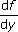 or, more formally 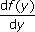 . The notation is reminiscent of the 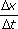 notation that was used when discussing the gradient of a straight line and thus provides a clear reminder of the link between the derived function and the gradient of the f against y graph. However, it is important to remember that is a single symbol representing the derived function, it is not the ratio of two quantities df and dy.
Although there are systematic ways of finding derived functions from first principles, you will not be required to use them in this course. Indeed, physicists are rarely required to do this because tables of derivatives already exist for all the well-known functions, and derivatives of more complicated functions can usually be expressed as combinations of those basic derivatives. Table 6 lists a few of the basic derivatives along with the simplest of the rules for combining them - it also gives some explicit examples of functions and their derivatives. Computer packages are now available that implement the rules of differentiation, these are often used to determine the derivatives of more complicated functions (Figure 32).
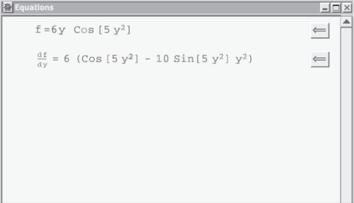
Figure 32: A function and its derivative, as displayed by an algebraic computing package
| Derivative |
|
|---|---|---|
|
|
|
|
|
|
|
|
|
|
|
|
|
|
|
 Function f(y)
Function f(y) 


The idea of a derivative may be new to you and, if so, may seem rather strange. However, if you know the explicit form of a function, then there are several crucial advantages in using derivatives to determine gradients, rather than making measurements on a graph. In particular, looking up the derivative of a function in a table should be completely accurate, whereas measuring the gradient of the tangent to a graph is always approximate. For example, if f(y) = y2 then the derivative of f(y) is df/dy = 2y and evaluating the derivative at y = 3 to find the gradient at that particular value of y gives 6. This is an exact result that could not have been obtained with such precision from measurements on a graph. Moreover, if we want to know the gradient at many different values of y, all we need to do is to substitute each of those values into the general expression for the derivative, df/dy = 2y. This is much simpler than drawing many different tangents and measuring their individual gradients.
4.4 Velocity and acceleration as derivatives¶
Recalling that the instantaneous velocity of a particle at time t is given by the gradient of its position-time graph at that time, we can now use the terminology of functions and derivatives to say that the velocity of the particle is given by the derivative of its position function. In terms of symbols:

Similarly, we can say that the instantaneous acceleration of a particle is given by the derivative of the velocity function:
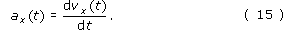
What’s more we can use derivatives to simplify problems, as Example 1 shows.
Example 1¶
Question¶
The position x of a particle at time t is given by the function x(t) = kt2 where k = −5 m s −2. Find (a) the velocity as a function of time; (b) the velocity at time t = 3 s.
Answer¶
The velocity vx is the derivative with respect to time of the position function x(t) which is of the form Atn, with A = k and n = 2. It therefore follows from the third of the standard results in Table 6 that
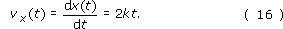
This is the required answer. No measuring of the gradients of tangents to curves is involved!
Remembering that k is given as −5 m s−2, the velocity at time t = 3 s is now easily obtained from Equation 16, as follows
vx(3 s) = 2kt = 2 × (−5 m s−2) × (3 s) = −30 m s−1
Note that we have multiplied m s−2 by s to give m s−1, i.e. the units have been treated just like algebraic quantities.
Question 17¶
Question¶
If the velocity vx(t) of a particle is given by vx(t) = kt2, where k = 4 m s−3, find a general expression for the acceleration ax(t). What is the value of ax(3 s)?
Answer¶
The expression for the acceleration is given by
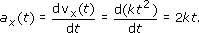
using Table 6. Therefore ax(3 s) = (2 × 4 × 3) m s−2 = 24 m s−2.
Although it would be quite wrong to think of dx/dt as a ratio of the quantities dx and dt, it is useful to regard dx/dt as consisting of an entity d/dt that acts on the function x(t). The entity d/dt is a mathematical instruction to differentiate the function that follows, x(t) in this case. It is an example of what a mathematician would call an operator. Adopting this view, we can say that if, for example, x(t) = kt2 + ct, then

Using the rule for differentiating the sum of two functions, from Table 6, we may write this as
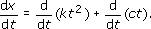
Using the third result in Table 6 we may work out both the derivatives on the right-hand side to obtain

Regarding d/dt as an operator also suggests another way of writing the acceleration. We already know that
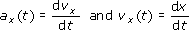
so it seems sensible to write
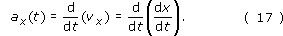
This emphasises that the acceleration of a particle is the rate of change of the rate of change of the position, or if you prefer, the derivative of the derivative of the position function. Either of these formulations is a bit of a mouthful, so it is more conventional to refer to the acceleration as the second derivative of x(t) and to represent it symbolically by

Once again, it would be quite wrong to think of this as some kind of ratio of d2x and dt2; it simply indicates that a particle’s position function, x(t), must be differentiated twice in order to find the particle’s acceleration.
Note: If you are not already familiar with derivatives you should pay particular attention to the positioning of the superscripts in the second derivative symbol. Newcomers to differentiation often make the mistake of writing dx2/dt2 when they mean d2x/dt2. Remembering that it is the operator d/dt that is to be squared rather than the function x(t) may help you to avoid this error.
Example 2¶
Question¶
Suppose, as in Example 1, the position of a particle is given by x(t) = kt2 where k is a constant. Find ax(t).
Answer¶
We use Equation 14 and the third result in Table 6 with A = k, y = t and n = 2, to obtain
It then follows from Equation 18, that

where we have again used the third result in Table 6 but with A = 2k and n = 1.
Question 18¶
Question¶
Suppose that the vertical position x of a test vehicle falling down a drop-shaft is given by the quadratic function
x(t) = k0 + k1t + k2t2
where k0, k1 and k2 are constants. Work out an expression for the vehicle’s acceleration ax(t) in terms of k0, k1 and k2, taking care to indicate each step in your working.

4.5 The signed area under a general velocity-time graph¶
We have already seen (in Section 3.6) that in the context of uniform motion, the signed area under a particle’s velocity-time graph, between two given times, represents the change in the particle’s position during that time interval, with a positive area corresponding to displacement in the positive direction. In the case of uniform motion, the velocity-time graph was a horizontal line and the area under the graph was rectangular.

Figure 33: The area under the velocity-time graph between t1 and t2 for an accelerating particle
Now, in the context of non-uniform motion, it seems natural to ask if the same interpretation can be given to the area under a general velocity-time graph, such as that between t1 and t2 in Figure 33. The answer to this is a definite yes, though a rigorous proof is beyond the scope of this course, so what follows is simply a plausibility argument.
In Figure 33, the colour-shaded area under the graph does not take the shape of a rectangle. However, it may be approximately represented by a sum of rectangular areas, as indicated in Figure 34. To produce Figure 34 we have broken the time between t1 and t2 into a number of small intervals, each of identical duration Δt and within each small interval, the velocity has been approximated by a constant, which can be taken to be the average velocity during that interval. As a result, the area of each rectangular strip in Figure 34 represents the approximate change of position over a short time Δt and the sum of those areas represents the approximate change of position over the interval t1 to t2. Now, if we were to repeat this process while using a smaller value for Δt, as in Figure 35, then we would have more strips between t1 and t2; their total area, representing the approximate change in position between t1 and t2, would be an even closer approximation to the true area shown in Figure 33. Given these results, it seems reasonable to suppose that if we allowed Δt to become smaller and smaller, while the number of rectangular strips between t1 and t2 became correspondingly larger and larger, then we would eventually find that the area under the graph in Figure 33 was exactly equal to the change in position between t1 and t2.

Figure 34: The area under the velocity-time graph of Figure 33, broken up into thin rectangular strips

Figure 35: The area under the velocity-time graph of Figure 33, broken up into even more rectangular strips by reducing the value of Δt
This conclusion is in fact correct and can be proved in a rigorous way by considering what mathematicians call a limit, in this case ‘the limit as Δt tends to zero’. We shall not pursue that here, but we should note that it wasn’t until the early nineteenth century that the mathematics of limits was properly formulated, although it was in use long before then. It is also worth pointing out that it was the development of the idea of a limit that finally laid Zeno’s paradox to rest. Just as the increasing number of diminishing strips can have a finite total area, so the increasing number of smaller steps that Achilles must take to reach the tortoise can have a finite sum and be completed in a finite time. Rigorous mathematical reasoning agrees with our everyday experience in telling us that motion can exist and that athletes outrun tortoises!

Figure 36: The velocity-time graph for Self-assessment question 19
Question 19¶
Question¶
Figure 36 shows the velocity-time graph for a particle with constant acceleration.
What is the displacement of the particle from its initial position after 6 s?
What is the distance travelled by the particle between t = 2 s and t = 6 s? (You may find it useful to know that the formula for the area of a triangle is: area = half the base × height, and that for the area of a trapezium is: area = base × (half the sum of the lengths of the parallel sides).)
Answer¶
The displacement over the first 6 s is equal to the total signed area between the graph and the t-axis and between t = 0 s and t = 6 s in Figure 37. Recall that regions below the axis are regarded as negative areas. In this case the total area is composed of two triangles, one above the axis, one below. The total displacement is therefore given by
sx(6 s) = (1/2)×(1 s)×(1.2 m s−1) −(1/2)×(5 s)×(6 m s−1)
i.e. sx(6 s) = (0.60 m) −(15 m) = −14.4 m.
The distance travelled between t = 2 s and t = 6 s will be the magnitude of the displacement over that time. Note that the displacement will be negative since it is represented by the area of the colour-shaded trapezium, which is entirely below the axis. However, the corresponding distance will be positive (since it is a magnitude) and will have the value
s = [(1/2) × (6 s − 2 s) × (6 m s−1 − 1.2 m s−1)] + [(6 s − 2 s) × 1.2 m s−1] = 14.4 m

Figure 37: The velocity-time graph for Self-assessment question 19